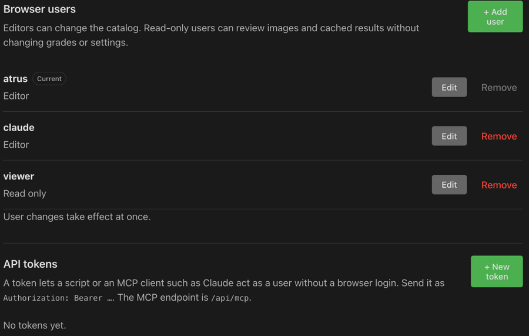
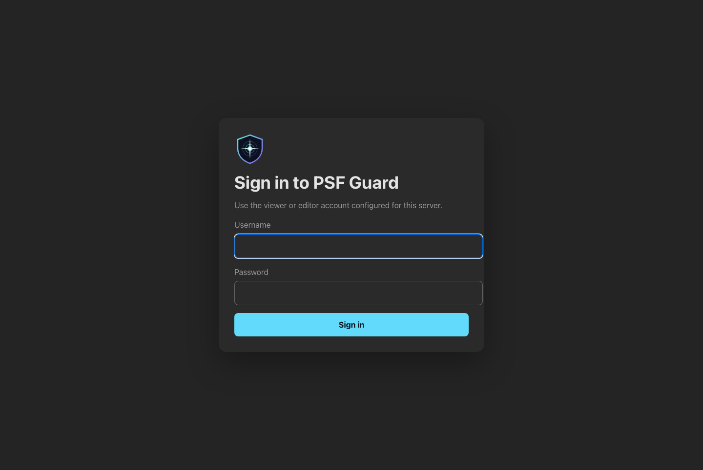

Server Accounts
Turn on logins for a PSF Guard web server, give people editor or read-only access, and mint API tokens for scripts and agents. The desktop app needs none of this: its own server listens on localhost only.
What a server with no accounts serves
The bind address decides. Reaching a loopback server already means reaching the machine, so it stays open. Any other address needs at least one account before it serves anything:
| Bind address | With no accounts |
|---|---|
127.0.0.1, ::1, localhost | Full access. The desktop app and local development use this. |
Anything else, including the default 0.0.0.0 | Every API request answers 401, reads included, until you add a user. |
--allow-database-management goes further: on a network
address the server will not start until an account exists, because those
routes name paths the server then reads and writes. Once it starts, only
editors can use them.
psf-guard users add editor --role
read-write. --allow-anonymous-access keeps it open
meanwhile.
Keep a network server open
--allow-anonymous-access gives every caller on a network
address what a localhost server gives, with no accounts and no login:
psf-guard server --host 0.0.0.0 --allow-anonymous-accessIt hands full editor access to anyone who can reach the port: grading,
imports, and, with --allow-database-management, the registry.
Use it only on a network you trust as much as the machine, or to upgrade an
older deployment without an outage. Then add accounts and drop the flag.
Editors and viewers
| Role | Can |
|---|---|
Read only (read-only) | Browse catalogs, images, quality results, exports and cached analysis. List, apply and export processing setups. Cannot grade, edit, or open Settings. |
Editor (read-write) | Everything above, plus grade with undo and redo, edit projects, targets and exposure plans, start quality scans and imports, save processing setups, write local exports, and apply sync previews. With database management on, also manage databases, peers, catalogs and calibration records. |
By default a viewer cannot start costly work: stack builds, plate solves,
satellite predictions, or view processing. Cached results stay available.
allow_read_only_compute = true lets viewers start that work;
fit for a trusted private server, not a public demo where repeated jobs could
use up CPU, network and cache space.
The server checks the role on every request, so a client calling the API directly gets no more. The UI marks a viewer's session Read only, hides Settings, and disables grading.
Manage users
An editor signed in to a web server gets a Users tab in Settings: add users, record an optional email, change roles or passwords, and remove users. Changes take effect at once. Changing a role or password, or removing a user, signs out that user's sessions; changing only the email does not. Settings will not remove the account you are signed in with, or the last editor.

The CLI does the same. Without --password-file it asks for
the password twice and shows nothing:
psf-guard users add viewer --role read-only --email viewer@example.com
psf-guard users add editor --role read-write --password-file /run/secrets/editor
psf-guard users list
psf-guard users remove viewer
# In Docker
docker exec -it psf-guard psf-guard users add admin --role read-write- Passwords are stored as salted Argon2 hashes in
auth.jsonbeside the registry, never in clear, with mode0600on Unix. --replacechanges an existing user's role or password.- The CLI will not remove the last user unless you pass
--allow-empty; logins then turn off after a restart. - With a custom registry, pass the same
--registrytousersandserver./srv/psf-guard/catalogs.jsonkeeps its users in/srv/psf-guard/catalogs.auth.json. - Restart the server after a CLI change. Sessions stay valid until then.
- An
auth.jsonwritten by a newer PSF Guard still loads. Fields this version does not know are kept and written back unchanged.
Sign in
Once auth.json holds a user, the browser shows a login page.
A login sets an HttpOnly, SameSite=Strict session cookie. Sessions live in
server memory, expire after session_hours, and end when the
server restarts or you sign out.

[server.auth]
session_hours = 168
# Omit to follow the browser's HTTP or HTTPS scheme.
#secure_cookie = true
allow_read_only_compute = falsesecure_cookie | Cookie |
|---|---|
| Omitted | A same-origin login over HTTPS gets a Secure cookie; over direct HTTP, a plain one. A proxy must keep the Host header. A request whose Origin does not match Host, or that sends no Origin, gets a Secure cookie. |
true | Always Secure: HTTPS only. |
false | Never Secure: for a direct HTTP client that sends no Origin, or a plain-HTTP proxy that rewrites Host. |
Over plain HTTP, anyone who can watch the connection sees the password and the session. Each port uses its own cookie name, so two local servers no longer sign each other out.
API tokens for scripts and agents
A personal API token lets a script or an MCP client act as a user without a browser login. Send it as a bearer credential:
curl -H "Authorization: Bearer psfg_…" https://guard.example/api/databasesOpen Settings → Users → API tokens and click + New token. Give it a Label, optionally an expiry in Expires after (days, optional), and tick Read only, whatever the user's role for a token that only reads. An editor can name another user in User (optional), which is how a viewer, who has no Settings, gets one. Click Create token and copy it: it is not shown again. Revoke stops a token at once.

psf-guard users token create editor --label "claude on laptop" --read-only --expires-days 90
psf-guard users token list
psf-guard users token revoke <id>- A token never gets more than its user has. A viewer's token reads; an editor's token can also write, unless it was made read only.
- A token cannot mint or revoke tokens. That takes a signed-in session, so a leaked token cannot renew itself.
- Removing a user removes that user's tokens.
auth.jsonkeeps each token's SHA-256, owner, label and dates, never the token. Tokens made in Settings work at once; restart the server after a CLI change.
See MCP for Agents for what an agent can do with one. Scripts can also log in with a cookie jar:
curl -c psf-guard.cookies -H "Content-Type: application/json" \
-d '{"username":"editor","password":"..."}' \
https://guard.example/api/auth/login
curl -b psf-guard.cookies https://guard.example/api/databasesCredentials for remote clients
Remote image uploads and scheduler sync use their own
Authorization: Bearer keys, each scoped to one catalog. They
work with or without browser accounts, so a headless intake server runs on
them alone.
To pair a client, an editor opens Settings → Databases, edits the catalog, and clicks Generate pairing code beside Pair a client. The code works once, for an hour. The client gets the catalog ID and its own credential; the server keeps only a digest, and the N.I.N.A. plugin keeps the credential in Windows Credential Manager. Pairing turns on scheduler sync. Image uploads stay a separate choice with their own receive directory.
Paired clients lists each installation. Revoking one leaves browser sessions, other clients and the manual Remote API key alone, and replacing the manual key leaves paired clients alone. See N.I.N.A. Sync Plugin.
The Director plugin pairs separately, with its own one-use codes and credentials. A sync key or pairing code grants no Planning access, and API tokens cannot issue or revoke Director clients.
Deploy safely
- Put a public server behind HTTPS. Otherwise passwords cross the network in clear text.
- Keep
auth.jsonreadable only by the PSF Guard user. - Seed the first account from an existing secret with
--password-file; only the hash is written. - Leave
--allow-database-managementoff unless you need database changes from the browser. An editor login does not bypass it, and it does not bypass the login: on a network address the server needs both. - Treat
--allow-anonymous-accessas temporary. A public server running it has no access control. - Signing out ends that session. A restart ends every browser session.